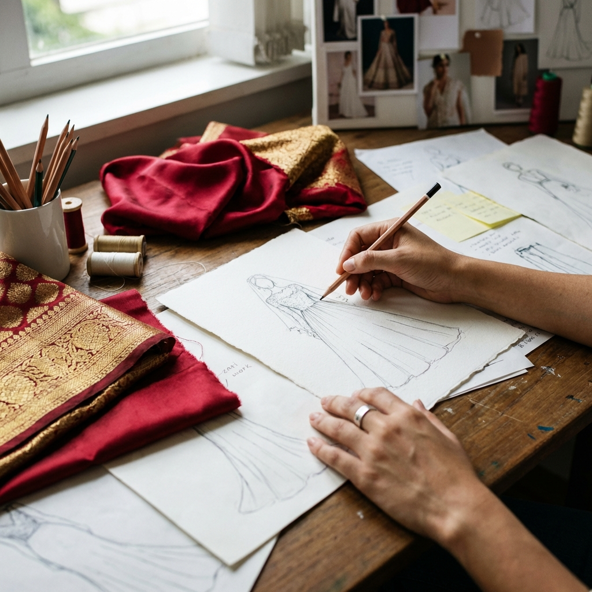
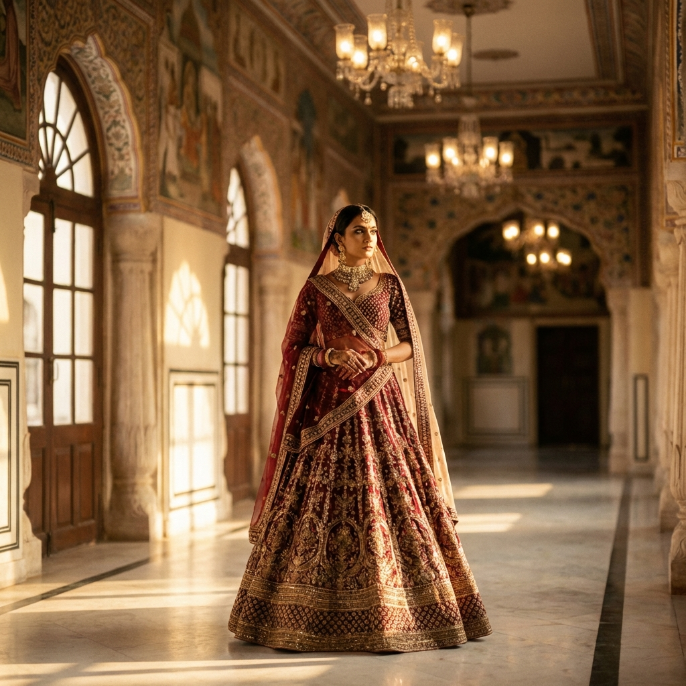

An introduction to our Creative Directors

Disha Chauhan & Garima Chauhan
Tale of 2 Sisters founded SHRINZA with a singular belief: that couture should honour where we come from while dressing us for where we're going. Trained under master karigars in the embroidery houses of North India and later in contemporary garment construction in Europe, the sisters have spent over a decade translating centuries-old hand-craft into silhouettes built for the modern bride and the modern woman.
Every SHRINZA piece begins on their worktable — a sketch, a swatch of hand-loomed fabric, a thread of zardozi gold — long before it becomes a finished garment. It's a process they have protected fiercely as the label has grown: nothing leaves the atelier that hasn't passed through their hands.
"Every garment should carry a memory — of the hands that made it, and the moment it was made for."— Tale of 2 Sisters
Zardozi, aari, and hand-embroidery techniques passed down through generations of karigars, kept alive in every SHRINZA piece.
Silhouettes reimagined for the way we actually live — Indo-Western fusion that moves easily between tradition and the everyday.
No two brides are alike. Every bridal commission begins with a personal consultation, not a catalogue.
Behind every SHRINZA piece is a small team of karigars, tailors, and embroiderers working alongside the sisters in the label's Delhi atelier. Fabrics are hand-selected, motifs are hand-drawn before they're ever embroidered, and every bridal order is fitted in person wherever possible — a slower way of working that the label has never been willing to compromise on.
Visit the Bridal Studio
Explore the current collection, or start a conversation about your own bespoke piece.